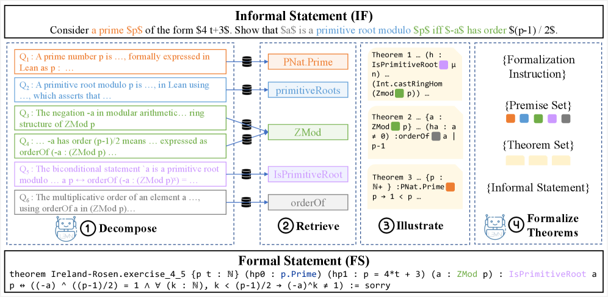

DRIFT decomposes informal statements to retrieve Mathlib premises for Lean autoformalization, evaluated on ProofNet, MiniF2F, and ConNF.
Abstract
Automating the formalization of mathematical statements for theorem proving remains a major challenge for Large Language Models (LLMs). LLMs struggle to identify and utilize the prerequisite mathematical knowledge and its corresponding formal representation in languages like Lean. Current retrieval-augmented autoformalization methods query external libraries using the informal statement directly, but overlook a fundamental limitation: informal statements lack direct mappings to mathematical theorems and lemmata, nor do those theorems translate trivially into the formal primitives of languages like Lean. To address this, we introduce DRIFT, a novel framework that enables LLMs to decompose informal mathematical statements into smaller, more tractable "sub-components". This facilitates targeted retrieval of premises from mathematical libraries such as Mathlib. Additionally, DRIFT retrieves illustrative theorems to help models use premises more effectively in formalization tasks. We evaluate DRIFT across diverse benchmarks (ProofNet, ConNF, and MiniF2F-test) and find that it consistently improves premise retrieval, nearly doubling the F1 score compared to the DPR baseline on ProofNet. Notably, DRIFT demonstrates strong performance on the out-of-distribution ConNF benchmark, with BEq+@10 improvements of 42.25% and 37.14% using GPT-4.1 and DeepSeek-V3.1, respectively. Our analysis shows that retrieval effectiveness in mathematical autoformalization depends heavily on model-specific knowledge boundaries, highlighting the need for adaptive retrieval strategies aligned with each model's capabilities.
Problem
Automating the formalization of mathematical statements requires identifying prerequisite mathematical knowledge and its formal representation in Lean. Current retrieval-augmented methods query external libraries using the informal statement directly, missing the fact that informal statements lack direct mappings to mathematical primitives in formal languages.
Approach
DRIFT (Decompose, Retrieve, Illustrate, then Formalize Theorems) decomposes an informal statement into atomic concept-focused sub-queries using an LLM, retrieves foundational dependent premises from a formal library for each sub-query using a dense retriever, selects a small set of illustrative examples via greedy coverage, and uses all this context to guide an LLM formalizer.

Figure 1: An overview of the Drift framework. Given an informal statement, Drift operates in four stages: ① Decompose: An LLM breaks down the informal statement into atomic, concept-focused sub-queries ( \mathcal{Q} ) (§ 3.1 ). ② Retrieve: For each sub-query, a dense retriever identifies foundational dependent premises from a formal library (§ 3.2 ). ③ Illustrate: Greedy selection of a small set o
Results
On ProofNet, DRIFT with Claude-Opus-4 achieves F1 of 27.68 for dependency retrieval, roughly doubling the no-decomposition baseline (13.77). On the ConNF benchmark, DeepSeek-V3.1 reaches F1 of 36.88. The decomposition step consistently improves precision and recall of retrieved premises across all benchmarks.